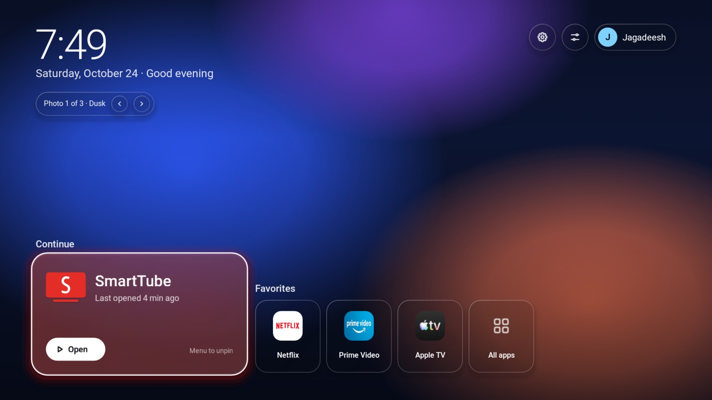
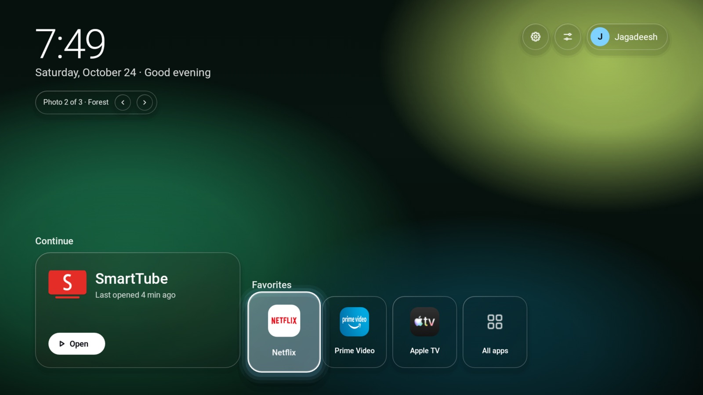
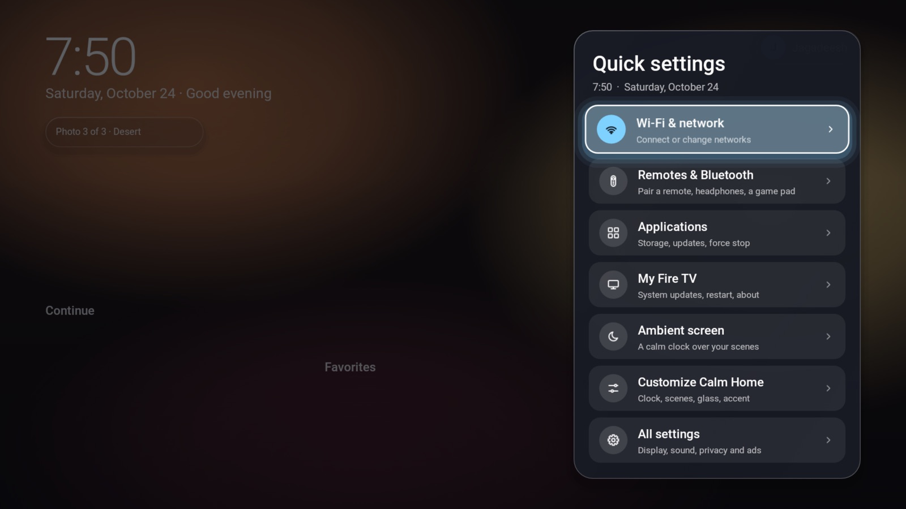
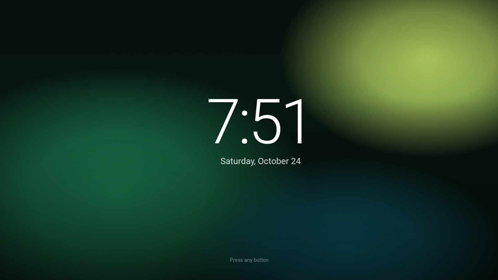
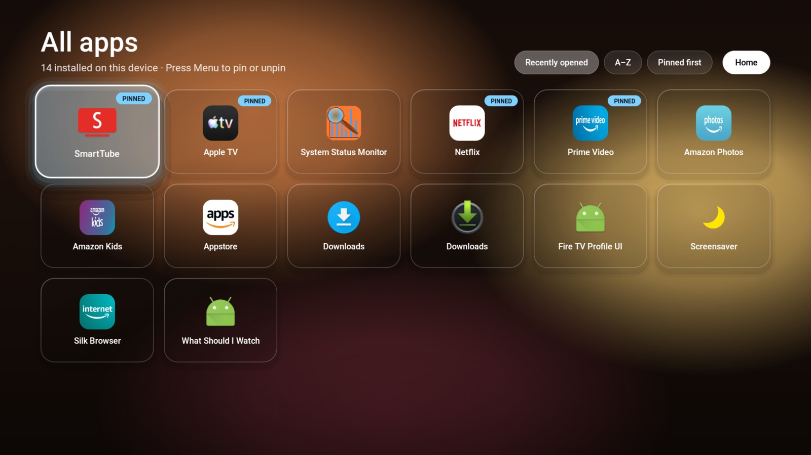
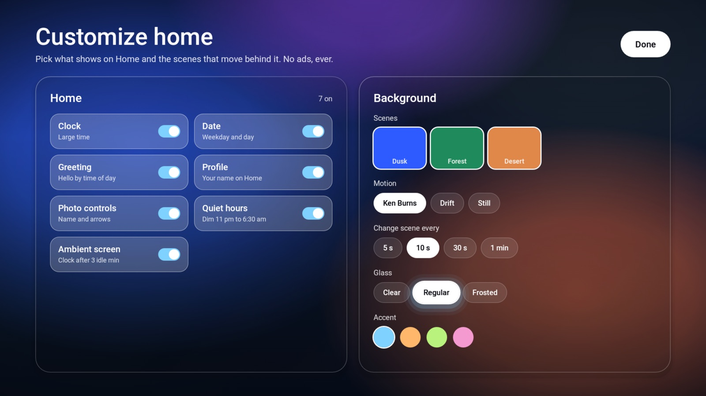

Calm Home is a quiet, ad-free home screen for Amazon Fire TV and Android TV: your apps, a clock and softly moving light. No banners, no promos, no tracking. One command installs it.
npx github:jthiruveedula/calm-home installNeeds Node 18+ on your computer and ADB debugging on the TV. The CLI fetches Android's adb for you if it is missing.

Built from scratch for a 2018 Fire TV Stick 4K and tuned until it never stutters. Everything runs on the TV; nothing is sent anywhere.
A large card for the app you opened last, washed in that app's own colour, with when you opened it.
Spring-loaded focus, a soft glow, gentle parallax and staggered entrances. About 0.5% slow frames on a 2018 stick.
After three idle minutes a large, drifting clock fades in over the scenes. The first button only wakes it.
Wi-Fi, Bluetooth remotes, apps and system updates in a glass side panel, one press from Home.
No network, storage or account access at all. It cannot show ads because it cannot reach the internet.
Uninstall in one command. The optional debloat only disables packages and keeps a backup to restore.
Real captures from a Fire TV Stick 4K, not mock-ups.





Works from macOS, Windows or Linux. Your computer and TV must be on the same Wi-Fi.
Fire TV: Settings › My Fire TV › Developer options › ADB debugging. (No Developer options? Open Settings › My Fire TV › About and press Select on the device name 7 times.) Android TV: Settings › Device Preferences › About › press Build 7 times, then Developer options › USB debugging.
It finds the TV on your network, connects, downloads the latest release, checks its SHA-256 and installs it.
npx github:jthiruveedula/calm-home installTick "Always allow from this computer" and press OK. Calm Home opens by itself. On Fire TV, find it later under Your Apps.
Zero dependencies. Every download is checksum-verified before it touches your TV.
| scan | Find TVs with network ADB on your Wi-Fi |
| install | Install or update Calm Home (latest release) |
| status | Device, DNS, installed apps and debloat state |
| apps · add <app> | App catalog. add smarttube installs the ad-free YouTube client, picking the right CPU build |
| debloat | Fire TV only: disable 45 Amazon telemetry, ads and promo packages. Reversible; try --dry-run |
| restore | Undo the last debloat from its backup |
| sideload <apk> | Install any APK file |
| uninstall [app] | Remove Calm Home or a catalog app |
npx github:jthiruveedula/calm-home status --device 192.168.1.20
npx github:jthiruveedula/calm-home add smarttube
npx github:jthiruveedula/calm-home debloat --dry-runNo. Fire OS protects Amazon's launcher, so the Home button still opens it. Calm Home is the app you live in: open it from Your Apps, and Back from any app returns to it. On Android TV you can set it as the default launcher.
No app can remove ads inside other apps. For YouTube, the catalog's SmartTube client blocks them. For the rest of the device, point it at an ad-blocking DNS such as AdGuard (94.140.14.14 / 94.140.15.15) in Settings › Network.
It only runs pm disable-user on a curated list, never uninstalls, and saves a backup. Streaming apps, the Appstore, settings and system updates keep working. restore re-enables everything.
Fire OS caches app icons. Restart the TV (hold Select + Play for 5 seconds) and the Calm Home logo comes back.